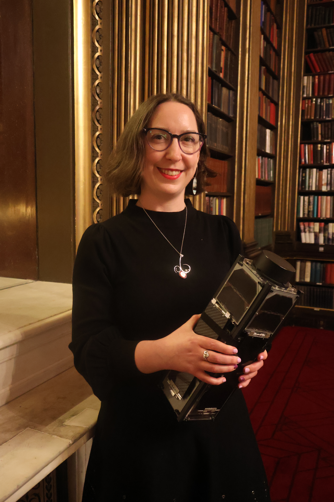
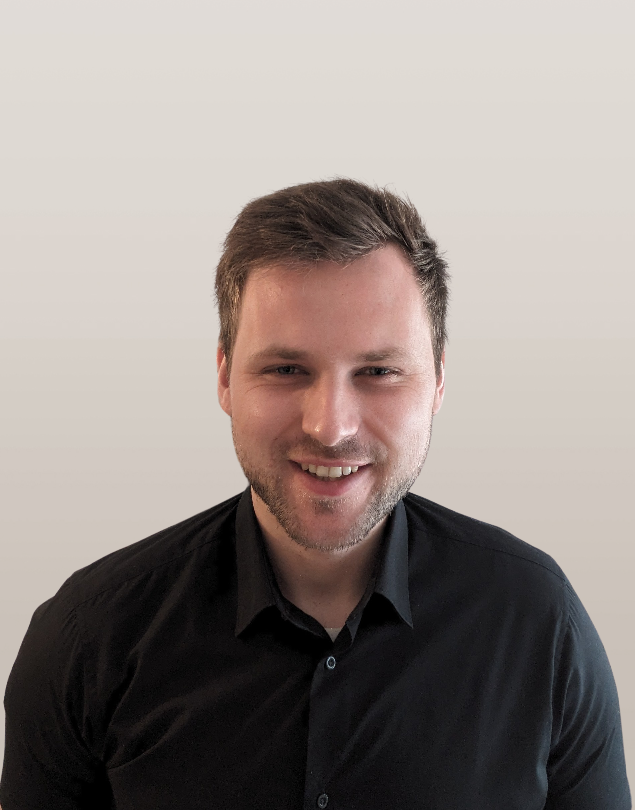
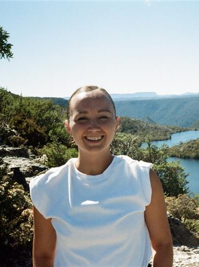
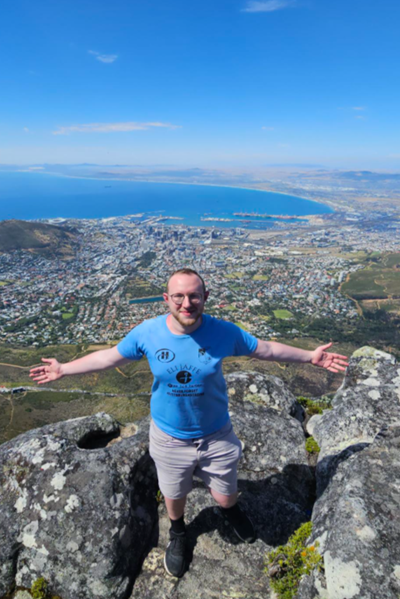
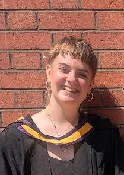

People
An interdisciplinary team developing practical, responsible approaches to astrodynamics, space mission design and sustainable space activity.

Lecturer in Aerospace Systems
Dr Ciara McGrath is a lecturer in aerospace systems at the University of Manchester, United Kingdom, with expertise in astrodynamics and space mission design. She is the Institution of Engineering and Technology (IET) Young Woman Engineer of the Year 2021, and has appeared on TV, radio, and podcasts, and given a TEDx talk, promoting engineering and the space industry to a wide audience. She has worked in the space industry in the Republic of Ireland, the United Kingdom, Germany, and the Netherlands, and in 2017 was a visiting Fulbright scholar at the Massachusetts Institute of Technology (MIT), USA.
Lecturer in Space Engineering
Dr Manu H. Nair is a Lecturer in Space Engineering at the University of Manchester, United Kingdom. His research develops tools for sustainable space mission design, assessing orbital capacity and wider mission impacts. He completed a PhD in Space Robotics at the University of Lincoln in 2024, developing the End-Over-End Walking Robot (E-Walker) for in-space assembly and disassembly of infrastructure. His work spans space robotics, model-based systems engineering and space sustainability, including the UK Space Agency-led Active Debris Removal feasibility study, LEOPARD. He represented India at RoboOlympics 2018, leading a team to two gold medals and one bronze medal.

PhD Researcher
John Mackintosh is a postgraduate researcher at the University of Manchester, developing tools to assess the societal benefits and environmental impacts of space missions during early design. His research on collision risk for Earth observation satellites is published in Advances in Space Research, and his work has been featured by the BBC. His report with Callala examines pollution from satellite manufacture and launch and space-specific life cycle assessment (LCA). He was a finalist in the British Interplanetary Society Student Paper Competition 2023 for work on mission sustainability scoring, and has presented internationally on mission benefits, orbital impacts and LCA.

PhD Researcher
Belén López Pardo is a postgraduate researcher at the University of Manchester specialising in astrodynamics and interplanetary mission design. Her research combines high-fidelity physics with computational efficiency to model complex orbital perturbations. She has presented at the AAS/AIAA Astrodynamics Specialist Conference and International Astronautical Congress, and developed satellite thermal-modelling solvers as a consultant for ESR Technology Ltd. An AFHEA-qualified educator, she has supported undergraduate teaching and projects, served as a PASS leader, and led the University’s CanSat team. She received the Royal Aeronautical Society Teddy Fielding Award.

PhD Researcher
Shalom Treblow is a postgraduate researcher in aerospace systems at the University of Manchester with expertise in astrodynamics and space mission design. His prior work has been published by the AIAA Journal of Spacecraft and Rockets. Shalom Treblow holds a first-class master’s degree in aerospace engineering from the University of Manchester and received the Best Student Award in 2023. His research aims to use an analytical approach to develop elegant and adaptable solutions that enable the collection of vital data needed on Earth by way of small reconfigurable satellite constellations.

PhD Researcher
Carys Thomas is a postgraduate researcher at the University of Manchester, working on evaluating the space industry's current and future impacts on climate change and identifying areas for positive change. They presented their work on quantifying a criterion for a net-positive active debris removal mission and space debris ranking model at the 76th International Astronautical Conference (IAC 2025) in Sydney, Australia. Carys’ research focuses on the environmental impact of space missions and their human impacts.

PhD Researcher
Mairi Johnston is a PhD student at the University of Manchester. Her research explores a range of the environmental impacts of the space industry, with particular focus on satellite design. Mairi’s recent work includes a comprehensive life cycle assessment of the University of Manchester’s SOAR CubeSat, informing the long-term development of simplified life cycle assessment methodology to quantify the terrestrial impacts of the space industry. Having attended ESA Academy’s Space Debris Training Course 2025, Mairi is also interested in the interactions between in-space and on-Earth dimensions of space sustainability.
Join the group
We welcome enquiries from prospective PhD candidates and collaborators who want to help shape a more responsible future for space activity.